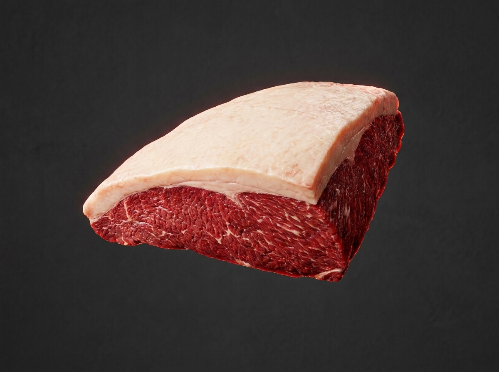

Mapa CarneCerta
Maciez premium e sabor marcante
A picanha é o corte mais macio e um dos mais saborosos, ideal para quem quer uma experiência de churrasco inesquecível.

Apresentando a picanha em sequência elegante…
Ideal para • churrasco • grelha • espetinho
Maciez
5/5
Extremamente macia
Gordura
4/5
Gordura equilibrada
Sabor
5/5
Marcante e refinado
Abrir recomendador inteligente
Picanha
Corte nobre, extremamente macio e com sabor intenso, perfeito para quem prioriza textura premium e presença no prato.
A picanha se destaca quando a prioridade é maciez e sabor. Ela é uma das melhores escolhas para churrasco, grelha e espetinhos, especialmente quando o objetivo é impressionar sem complicação.
Maciez alta
Sabor intenso
Churrasco premium
4.9
Escolha premium
Excelente para quem valoriza a combinação perfeita entre maciez, sabor e impacto visual em churrasco e grelha.
Ideal para
Dica do açougueiro IA
Corte em fatias grossas e cozinhe com atenção para preservar a suculência e o sabor marcante da picanha.